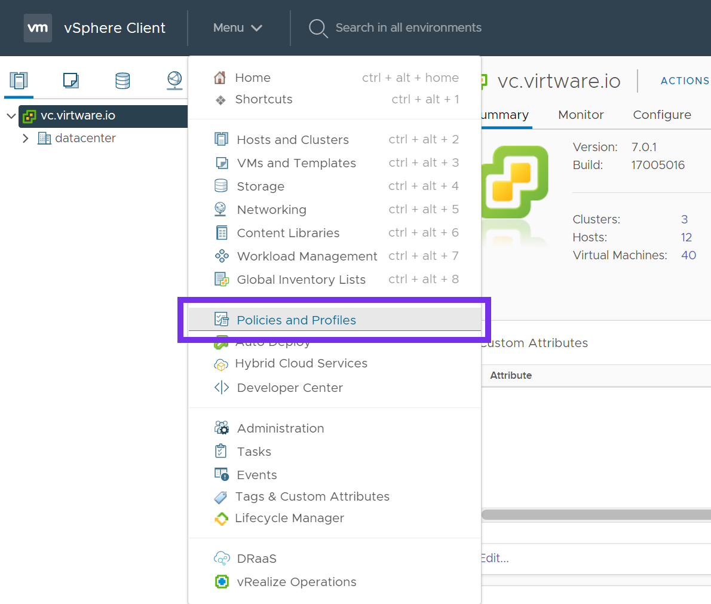
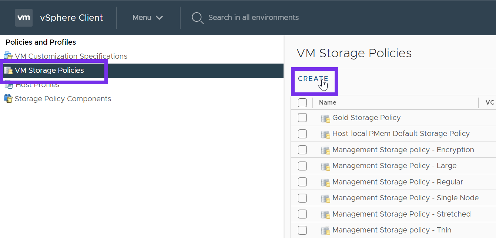
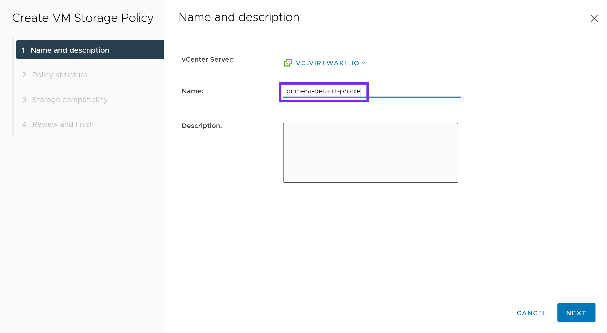
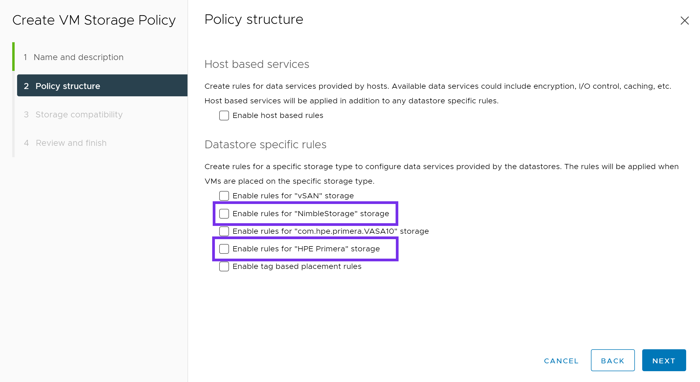
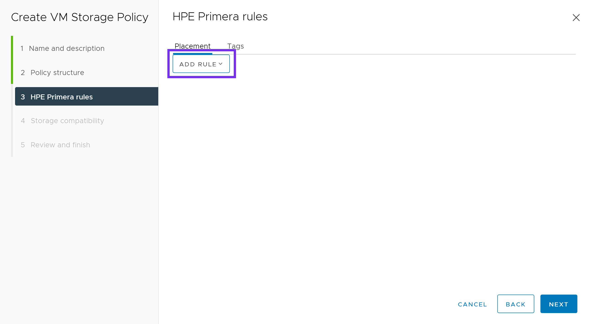
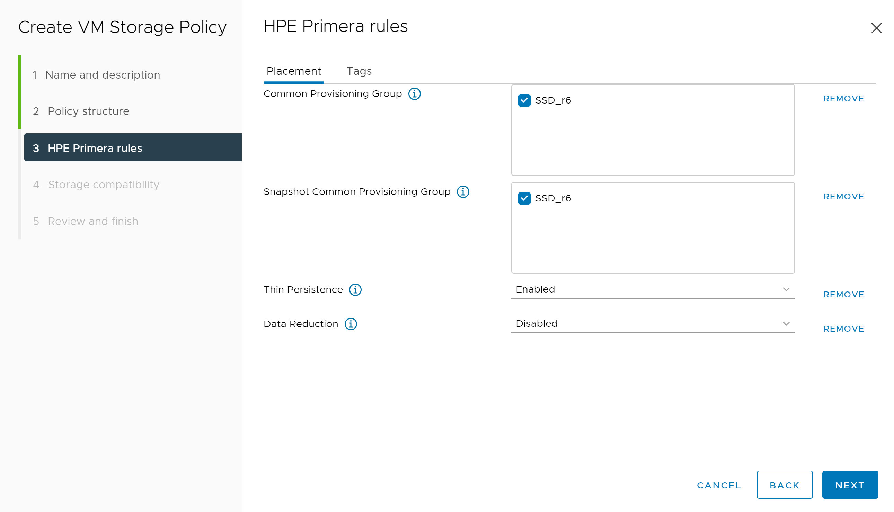
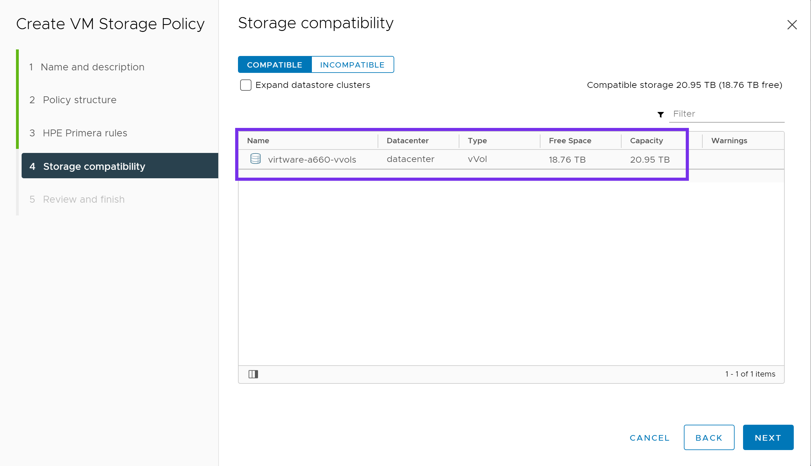
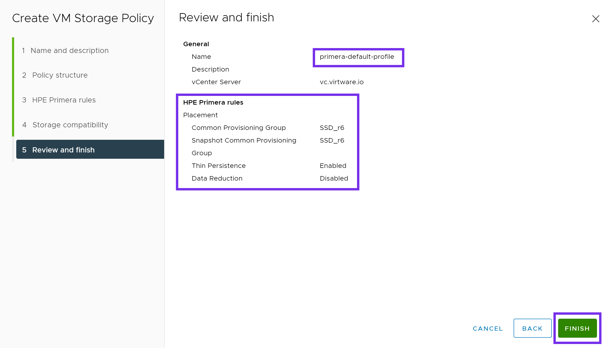
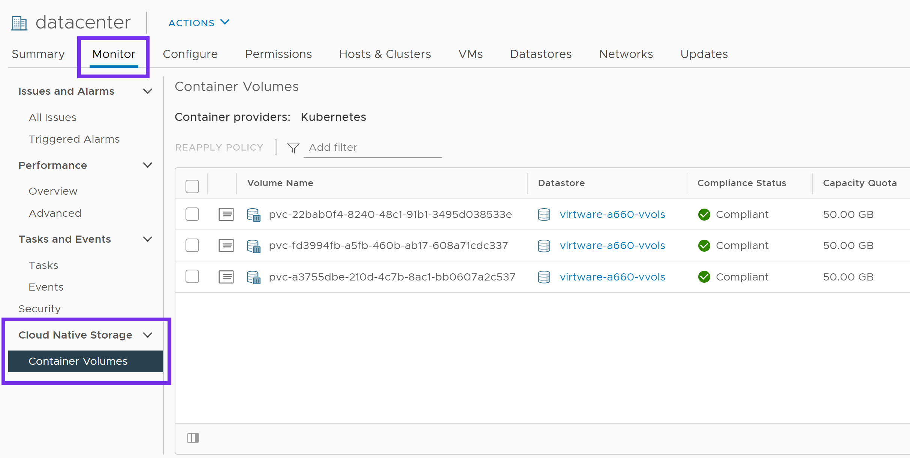

Deprecated¶
This deployment guide is deprecated. Learn more here.
Cloud Native Storage for vSphere¶
Cloud Native Storage (CNS) for vSphere exposes vSphere storage and features to Kubernetes users and was introduced in vSphere 6.7 U3. CNS is made up of two parts, a Container Storage Interface (CSI) driver for Kubernetes used to provision storage on vSphere and the CNS Control Plane within vCenter allowing visibility to persistent volumes through the new CNS UI within vCenter.
CNS fully supports Storage Policy-Based Management (SPBM) to provision volumes. SPBM is a feature of VMware vSphere that allows an administrator to match VM workload requirements against storage array capabilities, with the help of VM Storage Profiles. This storage profile can have multiple array capabilities and data services, depending on the underlying storage you use. HPE primary storage (HPE Primera, Nimble Storage, Nimble Storage dHCI, and 3PAR) has the largest user base of vVols in the market, due to its simplicity to deploy and ease of use.
Tip
Check out the tutorial available on YouTube in the Video Gallery on how to configure and use HPE storage with Cloud Native Storage for vSphere.
Watch the video in its entirety or skip to configuring Tanzu with HPE storage or configuring the vSphere CSI Driver with HPE storage.
Feature Comparison¶
Volume parameters available to the vSphere CSI Driver will be dependent upon options exposed through the vSphere SPBM and may not include all volume features available. Please refer to the HPE Primera: VMware ESXi Implementation Guide or VMware vSphere Virtual Volumes on HPE Nimble Storage Implementation Guide for list of available features.
For a list of available volume parameters in the HPE CSI Driver for Kubernetes, refer to the respective CSP.
| Feature | HPE CSI Driver | vSphere CSI Driver |
|---|---|---|
| vCenter Cloud Native Storage (CNS) UI Support | No | GA |
| Dynamic Block PV Provisioning (ReadWriteOnce access mode) | GA | GA (vVOL) |
| Dynamic File Provisioning (ReadWriteMany access mode) | GA | GA (vSan Only) |
| Volume Snapshots (CSI) | GA | Alpha (2.4.0) |
| Volume Cloning from VolumeSnapshot (CSI) | GA | No |
| Volume Cloning from PVC (CSI) | GA | No |
| Volume Expansion (CSI) | GA | GA (offline only) |
| Raw Block Volume (CSI) | GA | Alpha |
| Generic Ephemeral Volumes (CSI) | GA | GA |
| Inline Ephemeral Volumes (CSI) | GA | No |
| Topology (CSI) | No | GA |
| Volume Health (CSI) | No | GA (vSan only) |
| CSI Controller multiple replica support | No | GA |
| Volume Encryption | GA | GA (via VMcrypt) |
| Volume Mutator1 | GA | No |
| Volume Groups1 | GA | No |
| Snapshot Groups1 | GA | No |
| Peer Persistence Replication3 | GA | No4 |
1 = Feature comparison based upon HPE CSI Driver for Kubernetes v2.1.1 and the vSphere CSI Driver v2.4.1
2 = HPE and VMware fully support features listed as GA for their respective CSI drivers.
3 = The HPE Remote Copy Peer Persistence feature of the HPE CSI Driver for Kubernetes is only available with HPE Alletra 9000 and Primera storage systems.
4 = Peer Persistence is an HPE Storage specific platform feature that isn't abstracted up the vSphere CSI Driver. Peer Persistence works with the vSphere CSI Driver when using VMFS datastores.
Please refer to vSphere CSI Driver - Supported Features Matrix for the most up-to-date information.
Deployment¶
When considering to use block storage within Kubernetes clusters running on VMware, customers need to evaluate which data protocol (FC or iSCSI) is primarily used within their virtualized environment. This will help best determine which CSI driver can be deployed within your Kubernetes clusters.
Important
Due to limitations when exposing physical hardware (i.e. Fibre Channel Host Bus Adapters) to virtualized guest OSs and if iSCSI is not an available, HPE recommends the use of the VMware vSphere CSI driver to deliver block-based persistent storage from HPE Primera, Nimble Storage, Nimble Storage dHCI or 3PAR arrays to Kubernetes clusters within VMware environments for customers who are using the Fibre Channel protocol.
The HPE CSI Driver for Kubernetes does not support N_Port ID Virtualization (NPIV).
| Protocol | HPE CSI Driver for Kubernetes | vSphere CSI driver |
|---|---|---|
| FC | Not supported | Supported* |
| iSCSI | Supported | Supported* |
* = Limited to the SPBM implementation of the underlying storage array
Prerequisites¶
This guide will cover the configuration and deployment of the vSphere CSI driver. Cloud Native Storage for vSphere uses the VASA provider and Storage Policy Based Management (SPBM) to create First Class Disks on supported arrays.
CNS supports VMware vSphere 6.7 U3 and higher.
Configuring the VASA provider¶
Refer to the following guides to configure the VASA provider and create a vVol Datastore.
| Storage Array | Guide |
|---|---|
| HPE Alletra 9000 | HPE Alletra 9000: VMware ESXi Implementation Guide |
| HPE Primera | VMware vVols with HPE Primera Storage |
| HPE Nimble Storage | Working with VMware Virtual Volumes |
| HPE Nimble Storage dHCI & HPE Alletra 5000/6000 | HPE Nimble Storage dHCI and VMware vSphere New Servers Deployment Guide |
| HPE 3PAR | Implementing VMware Virtual Volumes on HPE 3PAR StoreServ |
Configuring a VM Storage Policy¶
Once the vVol Datastore is created, create a VM Storage Policy. From the vSphere Web Client, click Menu and select Policies and Profiles.

Click on VM Storage Policies, and then click Create.

Next provide a name for the policy. Click NEXT.

Under Datastore specific rules, select either:
- Enable rules for "NimbleStorage" storage
- Enable rules for "HPE Primera" storage
Click NEXT.

Next click ADD RULE. Choose from the various options available to your array.

Below is an example of a VM Storage Policy for Primera. This may vary depending on your requirements and options available within your array. Once complete, click NEXT.

Under Storage compatibility, verify the correct vVol datastore is shown as compatible to the options chosen in the previous screen. Click NEXT.

Verify everything looks correct and click FINISH. Repeat this process for any additional Storage Policies you may need.

Now that we have configured a Storage Policy, we can proceed with the deployment of the vSphere CSI driver.
Install the vSphere Cloud Provider Interface (CPI)¶
This is adapted from the following tutorial, please read over to understand all of the vSphere, firewall and guest OS requirements.
Note
The following is a simplified single-site configuration to demonstrate how to deploy the vSphere CPI and CSI drivers. Make sure to adapt the configuration to match your environment and needs.
Check for ProviderID¶
Check if ProviderID is already configured on your cluster.
kubectl get nodes -o jsonpath='{range .items[*]}{.spec.providerID}{"\n"}{end}'
If this command returns empty, then proceed with configuring the vSphere Cloud Provider.
If the ProviderID is set, then you can proceed directly to installing the vSphere CSI Driver.
$ kubectl get nodes -o jsonpath='{range .items[*]}{.spec.providerID}{"\n"}{end}'
vsphere://4238c1a1-e72f-74bf-db48-0d9f4da3e9c9
vsphere://4238ede5-50e1-29b6-1337-be8746a5016c
vsphere://4238c6dc-3806-ce36-fd14-5eefe830b227
Create a CPI ConfigMap¶
Create a vsphere.conf file.
Note
The vsphere.conf is a hardcoded filename used by the vSphere Cloud Provider. Do not change it otherwise the Cloud Provider will not deploy correctly.
Set the vCenter server FQDN or IP and vSphere datacenter object name to match your environment.
Copy and paste the following.
# Global properties in this section will be used for all specified vCenters unless overridden in vCenter section.
global:
port: 443
# Set insecureFlag to true if the vCenter uses a self-signed cert
insecureFlag: true
# Where to find the Secret used for authentication to vCenter
secretName: cpi-global-secret
secretNamespace: kube-system
# vcenter section
vcenter:
tenant-k8s:
server: <vCenter FQDN or IP>
datacenters:
- <vCenter Datacenter name>
Create the ConfigMap from the vsphere.conf file.
kubectl create configmap cloud-config --from-file=vsphere.conf -n kube-system
Create a CPI Secret¶
The below YAML declarations are meant to be created with kubectl create. Either copy the content to a file on the host where kubectl is being executed, or copy & paste into the terminal, like this:
kubectl create -f-
< paste the YAML >
^D (CTRL + D)
Next create the CPI Secret.
apiVersion: v1
kind: Secret
metadata:
name: cpi-global-secret
namespace: kube-system
stringData:
<vCenter FQDN or IP>.username: "Administrator@vsphere.local"
<vCenter FQDN or IP>.password: "VMware1!"
Note
The username and password within the Secret are case-sensitive.
Inspect the Secret to verify it was created successfully.
kubectl describe secret cpi-global-secret -n kube-system
The output is similar to this:
Name: cpi-global-secret
Namespace: kube-system
Labels: <none>
Annotations: <none>
Type: Opaque
Data
====
vcenter.example.com.password: 8 bytes
vcenter.example.com.username: 27 bytes
Check that all nodes are tainted¶
Before installing vSphere Cloud Controller Manager, make sure all nodes are tainted with node.cloudprovider.kubernetes.io/uninitialized=true:NoSchedule. When the kubelet is started with “external” cloud provider, this taint is set on a node to mark it as unusable. After a controller from the cloud provider initializes this node, the kubelet removes this taint.
To find your node names, run the following command.
kubectl get nodes
NAME STATUS ROLES AGE VERSION
cp1 Ready control-plane,master 46m v1.20.1
node1 Ready <none> 44m v1.20.1
node2 Ready <none> 44m v1.20.1
To create the taint, run the following command for each node in your cluster.
kubectl taint node <node_name> node.cloudprovider.kubernetes.io/uninitialized=true:NoSchedule
Verify the taint has been applied to each node.
kubectl describe nodes | egrep "Taints:|Name:"
The output is similar to this:
Name: cp1
Taints: node-role.kubernetes.io/master:NoSchedule
Name: node1
Taints: node.cloudprovider.kubernetes.io/uninitialized=true:NoSchedule
Name: node2
Taints: node.cloudprovider.kubernetes.io/uninitialized=true:NoSchedule
Deploy the CPI manifests¶
There are 3 manifests that must be deployed to install the vSphere Cloud Provider Interface (CPI). The following example applies the RBAC roles and the RBAC bindings to your Kubernetes cluster. It also deploys the Cloud Controller Manager in a DaemonSet.
kubectl apply -f https://raw.githubusercontent.com/kubernetes/cloud-provider-vsphere/master/manifests/controller-manager/cloud-controller-manager-roles.yaml
kubectl apply -f https://raw.githubusercontent.com/kubernetes/cloud-provider-vsphere/master/manifests/controller-manager/cloud-controller-manager-role-bindings.yaml
kubectl apply -f https://raw.githubusercontent.com/kubernetes/cloud-provider-vsphere/master/manifests/controller-manager/vsphere-cloud-controller-manager-ds.yaml
Verify that the CPI has been successfully deployed¶
Verify vsphere-cloud-controller-manager is running.
kubectl rollout status ds/vsphere-cloud-controller-manager -n kube-system
daemon set "vsphere-cloud-controller-manager" successfully rolled out
Note
If you happen to make an error with the vsphere.conf, simply delete the CPI components and the ConfigMap, make any necessary edits to the vsphere.conf file, and reapply the steps above.
Now that the CPI is installed, we can proceed with deploying the vSphere CSI driver.
Install the vSphere Container Storage Interface (CSI) driver¶
The following has been adapted from the vSphere CSI driver installation guide. Refer to the official documentation for additional information on how to deploy the vSphere CSI driver.
Create a configuration file with vSphere credentials¶
Since we are connecting to block storage provided from an HPE Primera, Nimble Storage, Nimble Storage dHCI or 3PAR array, we will create a configuration file for block volumes.
Create a csi-vsphere.conf file.
Copy and paste the following:
[Global]
cluster-id = "csi-vsphere-cluster"
[VirtualCenter "<IP or FQDN>"]
insecure-flag = "true"
user = "Administrator@vsphere.local"
password = "VMware1!"
port = "443"
datacenters = "<vCenter datacenter>"
Create a Kubernetes Secret for vSphere credentials¶
Create a Kubernetes Secret that will contain the configuration details to connect to your vSphere environment.
kubectl create secret generic vsphere-config-secret --from-file=csi-vsphere.conf -n kube-system
Verify that the Secret was created successfully.
kubectl get secret vsphere-config-secret -n kube-system
NAME TYPE DATA AGE
vsphere-config-secret Opaque 1 43s
For security purposes, it is advised to remove the csi-vsphere.conf file.
Create RBAC, vSphere CSI Controller Deployment and vSphere CSI node DaemonSet¶
Check the official vSphere CSI Driver Github repo for the latest version.
kubectl apply -f https://raw.githubusercontent.com/kubernetes-sigs/vsphere-csi-driver/master/manifests/v2.1.0/vsphere-67u3/deploy/vsphere-csi-controller-deployment.yaml
kubectl apply -f https://raw.githubusercontent.com/kubernetes-sigs/vsphere-csi-driver/master/manifests/v2.1.0/vsphere-67u3/deploy/vsphere-csi-node-ds.yaml
kubectl apply -f https://raw.githubusercontent.com/kubernetes-sigs/vsphere-csi-driver/master/manifests/v2.1.0/vsphere-67u3/rbac/vsphere-csi-controller-rbac.yaml
kubectl apply -f https://raw.githubusercontent.com/kubernetes-sigs/vsphere-csi-driver/master/manifests/v2.1.0/vsphere-7.0/deploy/vsphere-csi-controller-deployment.yaml
kubectl apply -f https://raw.githubusercontent.com/kubernetes-sigs/vsphere-csi-driver/master/manifests/v2.1.0/vsphere-7.0/deploy/vsphere-csi-node-ds.yaml
kubectl apply -f https://raw.githubusercontent.com/kubernetes-sigs/vsphere-csi-driver/master/manifests/v2.1.0/vsphere-7.0/rbac/vsphere-csi-controller-rbac.yaml
kubectl apply -f https://raw.githubusercontent.com/kubernetes-sigs/vsphere-csi-driver/master/manifests/v2.1.0/vsphere-7.0u1/deploy/vsphere-csi-controller-deployment.yaml
kubectl apply -f https://raw.githubusercontent.com/kubernetes-sigs/vsphere-csi-driver/master/manifests/v2.1.0/vsphere-7.0u1/deploy/vsphere-csi-node-ds.yaml
kubectl apply -f https://raw.githubusercontent.com/kubernetes-sigs/vsphere-csi-driver/master/manifests/v2.1.0/vsphere-7.0u1/rbac/vsphere-csi-controller-rbac.yaml
Verify the vSphere CSI driver deployment¶
Verify that the vSphere CSI driver has been successfully deployed using kubectl rollout status.
kubectl rollout status deployment/vsphere-csi-controller -n kube-system
deployment "vsphere-csi-controller" successfully rolled out
kubectl rollout status ds/vsphere-csi-node -n kube-system
daemon set "vsphere-csi-node" successfully rolled out
Verify that the vSphere CSI driver CustomResourceDefinition has been registered with Kubernetes.
kubectl describe csidriver/csi.vsphere.vmware.com
Name: csi.vsphere.vmware.com
Namespace:
Labels: <none>
Annotations: <none>
API Version: storage.k8s.io/v1
Kind: CSIDriver
Metadata:
Creation Timestamp: 2020-11-21T06:27:23Z
Managed Fields:
API Version: storage.k8s.io/v1beta1
Fields Type: FieldsV1
fieldsV1:
f:metadata:
f:annotations:
.:
f:kubectl.kubernetes.io/last-applied-configuration:
f:spec:
f:attachRequired:
f:podInfoOnMount:
f:volumeLifecycleModes:
Manager: kubectl-client-side-apply
Operation: Update
Time: 2020-11-21T06:27:23Z
Resource Version: 217131
Self Link: /apis/storage.k8s.io/v1/csidrivers/csi.vsphere.vmware.com
UID: bcda2b5c-3c38-4256-9b91-5ed248395113
Spec:
Attach Required: true
Pod Info On Mount: false
Volume Lifecycle Modes:
Persistent
Events: <none>
Also verify that the vSphere CSINodes CustomResourceDefinition has been created.
kubectl get csinodes -o=jsonpath='{range .items[*]}{.metadata.name}{"\t"}{.spec.drivers[].name}{"\n"}{end}'
cp1 csi.vsphere.vmware.com
node1 csi.vsphere.vmware.com
node2 csi.vsphere.vmware.com
If there are no errors, the vSphere CSI driver has been successfully deployed.
Create a StorageClass¶
With the vSphere CSI driver deployed, lets create a StorageClass that can be used by the CSI driver.
Important
The following steps will be using the example VM Storage Policy created at the beginning of this guide. If you do not have a Storage Policy available, refer to Configuring a VM Storage Policy before proceeding to the next steps.
kind: StorageClass
apiVersion: storage.k8s.io/v1
metadata:
name: primera-default-sc
annotations:
storageclass.kubernetes.io/is-default-class: "true"
provisioner: csi.vsphere.vmware.com
parameters:
storagepolicyname: "primera-default-profile"
Validate¶
With the vSphere CSI driver deployed and a StorageClass available, lets run through some tests to verify it is working correctly.
In this example, we will be deploying a stateful MongoDB application with 3 replicas. The persistent volumes deployed by the vSphere CSI driver will be created using the VM Storage Policy and placed on a compatible vVol datastore.
Create and Deploy a MongoDB Helm chart¶
This is an example MongoDB chart using a StatefulSet. The default volume size is 8Gi, if you want to change that use --set persistence.size=50Gi.
helm install mongodb \
--set architecture=replicaset \
--set replicaSetName=mongod \
--set replicaCount=3 \
--set auth.rootPassword=secretpassword \
--set auth.username=my-user \
--set auth.password=my-password \
--set auth.database=my-database \
bitnami/mongodb
Verify that the MongoDB application has been deployed. Wait for pods to start running and PVCs to be created for each replica.
kubectl rollout status sts/mongodb
Inspect the Pods and PersistentVolumeClaims.
kubectl get pods,pvc
NAME READY STATUS RESTARTS AGE
mongod-0 1/1 Running 0 90s
mongod-1 1/1 Running 0 71s
mongod-2 1/1 Running 0 44s
NAME STATUS VOLUME CAPACITY ACCESS MODES STORAGECLASS AGE
datadir-mongodb-0 Bound pvc-fd3994fb-a5fb-460b-ab17-608a71cdc337 50Gi RWO primera-default-sc 13m
datadir-mongodb-1 Bound pvc-a3755dbe-210d-4c7b-8ac1-bb0607a2c537 50Gi RWO primera-default-sc 13m
datadir-mongodb-2 Bound pvc-22bab0f4-8240-48c1-91b1-3495d038533e 50Gi RWO primera-default-sc 13m
To interact with the Mongo replica set, you can connect to the StatefulSet.
kubectl exec -it sts/mongod bash
root@mongod-0:/# df -h /bitnami/mongodb
Filesystem Size Used Avail Use% Mounted on
/dev/sdb 49G 374M 47G 1% /bitnami/mongodb
We can see that the vSphere CSI driver has successfully provisioned and mounted the persistent volume to /bitnami/mongodb.
Verify Cloud Native Storage in vSphere¶
Verify that the volumes are now visible within the Cloud Native Storage interface by logging into the vSphere Web Client.
Click on Datacenter, then the Monitor tab. Expand Cloud Native Storage and highlight Container Volumes.
From here, we can see the persistent volumes that were created as part of our MongoDB deployment. These should match the kubectl get pvc output from earlier. You can also monitor their storage policy compliance status.

This concludes the validations and verifies that all components of vSphere CNS (vSphere CPI and vSphere CSI drivers) are deployed and working correctly.
Support¶
VMware provides enterprise grade support for the vSphere CSI driver. Please use VMware Support Services to file a customer support ticket to engage the VMware global support team.
For support information on the HPE CSI Driver for Kubernetes, visit Support. For support with other HPE related technologies, visit the Hewlett Packard Enterprise Support Center.